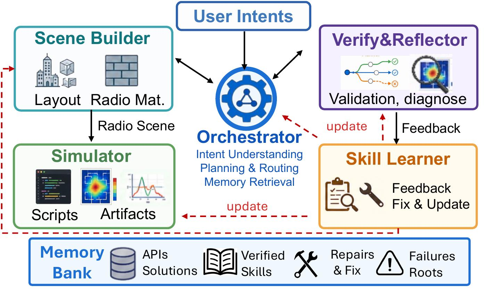
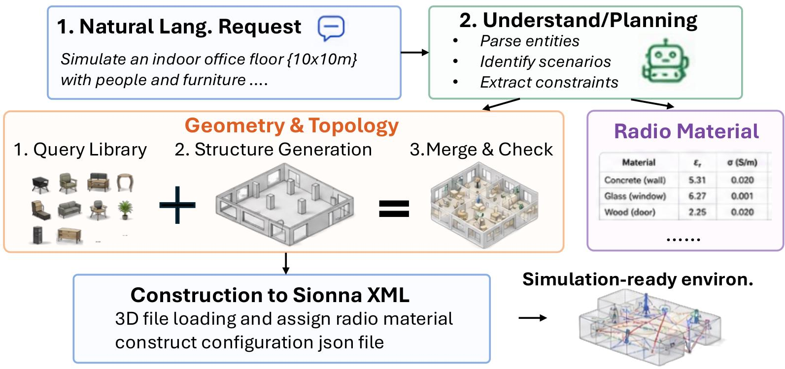

RF-aware worlds
Generated scenes are not just visual layouts. They expose editable objects, radio-material assignments, transmitter placement, and simulator-ready exports.
Anonymous project page · Under review
Intent-driven wireless network experimentation with self-evolving agents.
AutoNetSim turns natural-language wireless intents into executable radio environments, Sionna simulations, coverage diagnostics, and reusable simulation skills.
Why it matters
A valid result must keep geometry, RF materials, device placement, channel assumptions, PHY settings, and analysis objectives mutually consistent. AutoNetSim makes this workflow inspectable and executable.
Generated scenes are not just visual layouts. They expose editable objects, radio-material assignments, transmitter placement, and simulator-ready exports.
The agent produces runnable Sionna workflows for coverage, ray tracing, link-level metrics, network-level outputs, and follow-up planning experiments.
Failures become updates to a human-readable skill substrate, accepted only through geometry, Sionna-load, and physical-trend checks.
Interactive demo
The dashboard lets a user inspect the generated scene, edit furniture and RF parameters, run coverage computation, animate rays, and read BER, PDP, OFDM, and global statistics.
System design
A central orchestrator dispatches typed tasks to specialized workers. Scene building, simulation, reflection, planning, and skill learning all operate through inspectable artifacts instead of free-form chat alone.

FIG. 2The orchestrator–worker architecture. A memory bank of verified skills, solutions, and failure roots closes the loop between simulation and skill learning.
RUN TRACEA complete agent run, end to end — the orchestrator dispatches workers, artifacts are written, verifiers gate the results.
Agent workflow
AutoNetSim keeps the radio environment as a structured object-level state, exports it to simulator-facing artifacts, and turns verifier feedback into reusable procedural skill updates.

FIG. 3Radio-environment construction — from a natural-language request to a structured scene with radio materials and a simulation-ready Sionna export.
DEMOA seeded failure is caught by the verifier, diagnosed, patched, and re-run to a pass.
Main results
The benchmark checks whether the agent produces valid artifacts and simulations: legal geometry, in-bounds furniture, RF-material assignments, Sionna loadability, executable scripts, structured network traces, and physically plausible trends. Main experiments use Claude Sonnet 4.6 as the default backbone.
Citation
Use this temporary anonymous entry during review. Replace it with the final author list and venue after publication.
@article{anonymous2026autonetsim,
title = {AutoNetSim: Intent-Driven Wireless Network Experimentation with Self-Evolving Agents},
author = {Anonymous Authors},
year = {2026},
url = {https://anonymous123-max.github.io/agentic-sionna/}
}